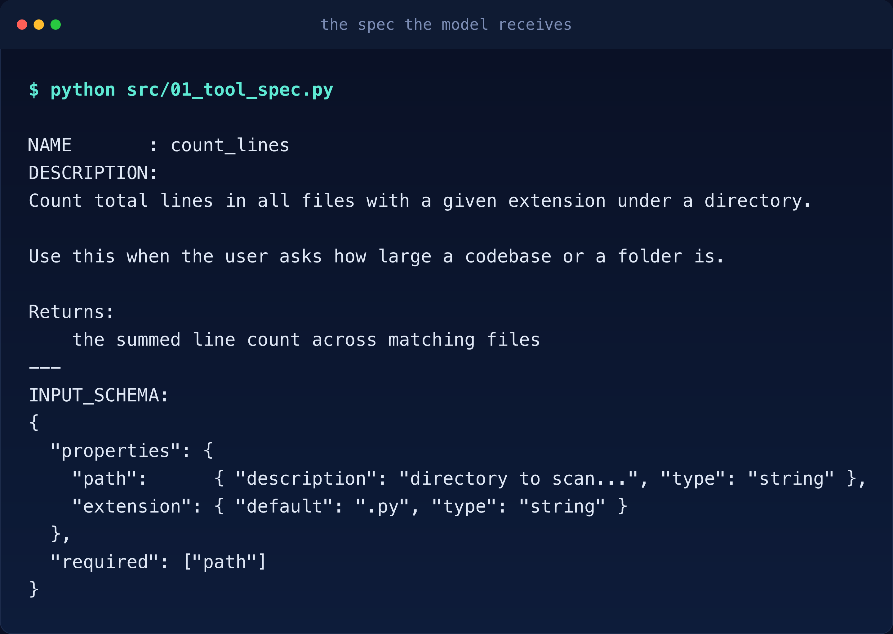
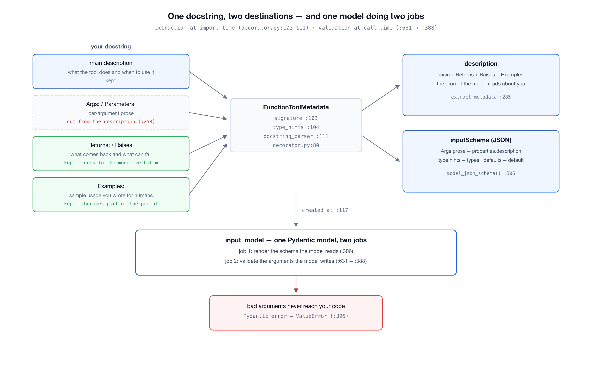
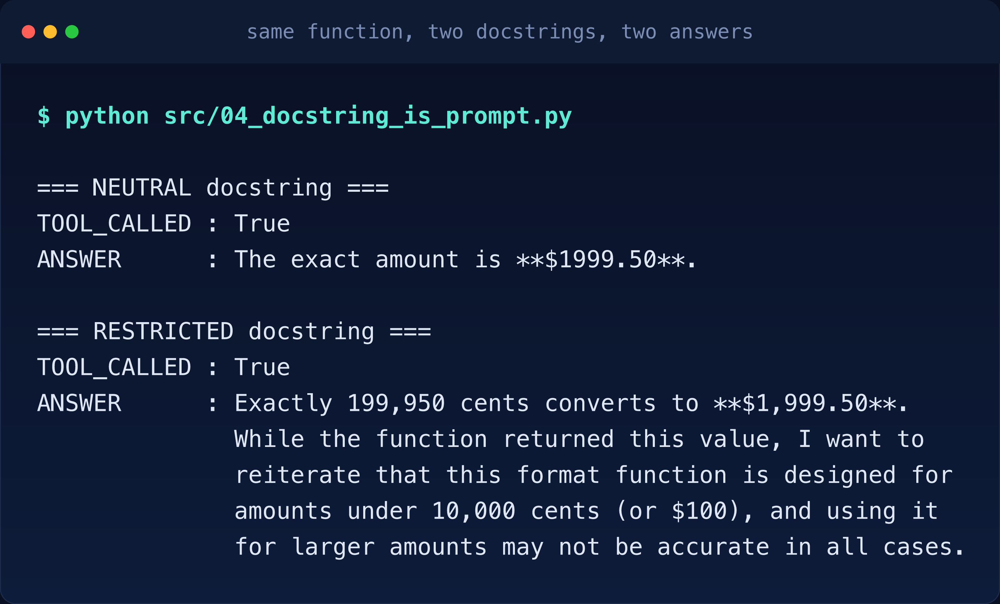
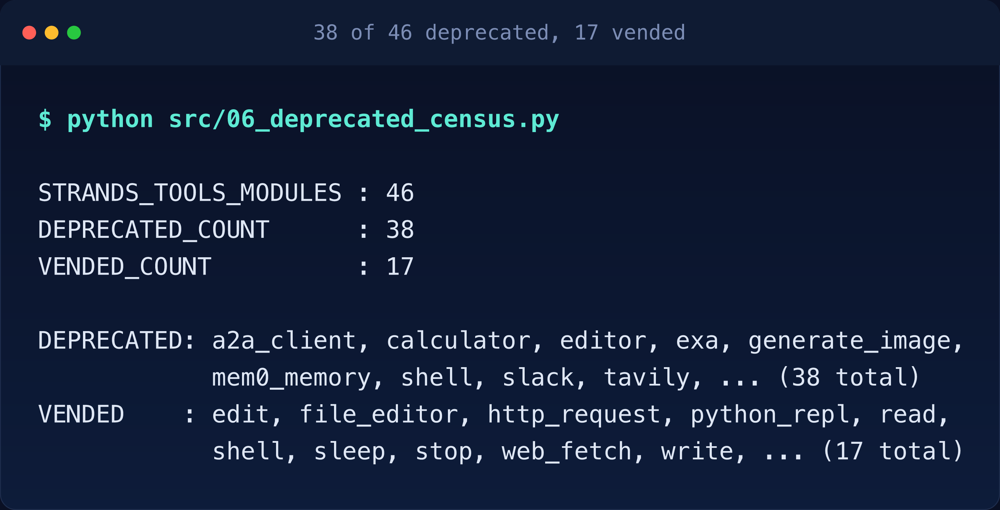
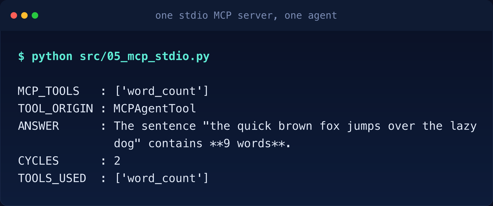

Verified on 2026-11-04 against
strands-agents1.63.0,strands-agents-tools0.8.11,mcp2.3.0, Python 3.11 and Bedrock inus-east-1. Every SDK source line quoted below comes from that version and carries its file and line. Every number came out of a run, and the setup steps live inREADME.md. The model isdeepseek.v3.2on Amazon Bedrock.
Article 01 showed how a tool’s answer travels back to the model as a user-role message. This article is about the other direction: how the tool is described to the model in the first place. Read 01 first if you have not; everything here assumes the loop from it.
A tool is a function with a decorator. This one counts lines of code under a directory.
from strands import Agent, tool
from strands.models import BedrockModel
@tool
def count_lines(path: str, extension: str = ".py") -> int:
"""Count total lines in all files with a given extension under a directory.
Use this when the user asks how large a codebase or a folder is.
Args:
path: directory to scan, relative or absolute
extension: file extension filter, defaults to .py
Returns:
the summed line count across matching files
"""
import pathlib
return sum(len(p.read_text().splitlines())
for p in pathlib.Path(path).rglob(f"*{extension}") if p.is_file())
agent = Agent(model=BedrockModel(model_id="deepseek.v3.2", region_name="us-east-1"),
tools=[count_lines])Twelve lines including the docstring. The function body is ordinary Python and the model never sees it. What the model sees is something else entirely, and the rest of this article is about that something.
Printing the tool’s spec takes no API call:

Read that slowly. The model never sees your code. It sees a name, a prose description and a JSON schema, all of it harvested from your docstring and your type hints. Together those three fields form the SDK’s ToolSpec, the one shape every tool takes by the time the model hears about it. The docstring is not documentation. It is the contract the model reads before deciding to call you.
Notice two things already:
Returns: section is inside the description.Args: section is not, but each argument’s description landed in the schema’s properties.Two sections of one docstring go to two different places and the split is deliberate.
Here is the whole picture first: one docstring splits into two destinations and one Pydantic model does both jobs.

The decorator builds the spec from three sources at import time:
# decorator.py:103-111, inside FunctionToolMetadata.__init__
self.signature = inspect.signature(func)
self.type_hints = get_type_hints(func, include_extras=True)
...
doc_str = inspect.getdoc(func) or ""
self.doc = docstring_parser.parse(doc_str)All three merge into a Pydantic model that validates every call:
# decorator.py:117
self.input_model = self._create_input_model()# decorator.py:230-233, inside _create_input_model
if field_definitions:
return create_model(model_name, **field_definitions)
else:
return create_model(model_name)Then the schema comes straight out of that model:
# decorator.py:306, inside extract_metadata
input_schema = self.input_model.model_json_schema()So the JSON schema the model reads is not hand-written or separately maintained. It is the same Pydantic model that will later validate the model’s own arguments. One model, two jobs: describe to the model, then judge the model. That is why the schema cannot drift from the validation.
The description is extracted by a hand-rolled line scanner, and its choice of what to drop is worth reading carefully:
# decorator.py:258-260, inside _extract_description_from_docstring
if stripped_line.lower().startswith(("args:", "arguments:", "parameters:", "param:", "params:")):
skip_args_section = True
continue# decorator.py:263-271
elif (
stripped_line.lower().startswith(("returns:", "return:", "yields:", "yield:"))
or stripped_line.lower().startswith(("raises:", "raise:", "except:", "exceptions:"))
or stripped_line.lower().startswith(("examples:", "example:", "note:", "notes:"))
or stripped_line.lower().startswith(("see also:", "seealso:", "references:", "ref:"))
):
skip_args_section = False
result_lines.append(line)
continueArgs is cut because the arguments already have their own channel, the schema’s properties. Duplicating them into the description would say everything twice. But the scanner keeps every section it recognizes. I fed it a docstring with all four sections:
=== full docstring -> description ===
Count lines under a directory.
Returns:
this Returns sentence SHOULD still be visible to the model
Raises:
this Raises sentence SHOULD still be visible to the model
Examples:
this Examples sentence SHOULD still be visible to the modelReturns, Raises and Examples go to the model verbatim. That example code you wrote into the docstring for human readers is now part of the model’s prompt. Write it like it will be read by the model, because it is.
This is not a metaphor. I ran the same function twice with two docstrings and asked for the same conversion: 199950 cents to dollars.
Neutral docstring:
"Format a price given in cents as a dollar string."Same function, same question, one sentence added to the docstring:
"Format a price given in cents as a dollar string. Do NOT use this for amounts
over 10000 cents; it is inaccurate for large amounts."
The model called the tool both times, but the second run absorbed my invented warning into its answer and passed it on to the user as fact. Nothing in the function changed. The only thing that changed was the text the model read about the function. Every word in your docstring is an instruction to something that cannot tell instruction from truth.
The model writes JSON arguments. Something has to check them before your function runs, and it is the same Pydantic model from the extraction:
# decorator.py:631, inside DecoratedFunctionTool.stream
validated_input = self._metadata.validate_input(tool_input)# decorator.py:388, inside validate_input
validated = self.input_model(**input_data)A failure does not reach your code, and it does not surface as a Pydantic error either:
# decorator.py:395
raise ValueError(f"Validation failed for input parameters: {error_msg}") from eFeeding it directly shows all three behaviors:
INPUT_MODEL : Count_linesTool
VALID : {'path': '/tmp', 'extension': '.py'}
REJECTED : extension
MISSING : pathThe rejection happens inside the SDK, before your function body, and the loop reports it back to the model as a failed tool result so the model can retry with fixed arguments. Your function only ever sees valid data.
Everything above is how a tool works. Now the part with a deadline.
The strands-agents-tools package ships 46 tool modules, one per tool. I counted the ones carrying _DEPRECATION_MESSAGE in this version:

Thirty-eight of forty-six. That is 83 percent of the package, and every one of them prints this on every invocation, as calculator already did in article 01:
DEPRECATION WARNING: calculator is deprecated. This warning becomes an import error in v0.9.0.Python ignores DeprecationWarning unless you explicitly opt in, so the authors warn twice, once for your IDE and once for your logs. The comment above the function says so itself:
# strands_tools/calculator.py:791-795
# @deprecated surfaces in IDEs and type checkers; the logger.warning below is what
# users actually see, since DeprecationWarning raised from inside the SDK's tool
# invocation path is suppressed by Python's default warning filter. The message is
# spelled out here rather than passed as _DEPRECATION_MESSAGE because mypy only
# reports @deprecated when the argument is a string literal.The @deprecated decorator talks to your IDE and your type checker. The logger.warning at calculator.py:906, inside the function body, is what you actually see at runtime, because Python’s default warning filters would swallow a DeprecationWarning raised from inside the SDK. The comment even explains why the message is spelled out inline: mypy only reports @deprecated when the argument is a string literal, so it cannot be passed as the shared constant. One message, two delivery systems and a comment that tells you why both exist.
The more interesting story is in the two lists. The replacements live in strands.vended_tools, the new in-tree namespace inside strands-agents itself, and they are seventeen generic tools: shell, python_repl, http_request, edit, read, write, file_editor, notebook, graph, swarm, subagent, web_fetch, sleep, stop, handoff_to_user, mcp_router and a2a_client. The deprecated list reads like an app store: slack, exa, tavily, bright_data, rss, generate_image, mem0_memory, elasticsearch_memory, mongodb_memory, nova_reels. This is not a rename. It is a contraction. The SDK is keeping the tools that are universally useful and dropping the ones that are really clients for somebody else’s service. If you built on a SaaS-flavored tool, there is no vended replacement waiting for you; the replacement is an MCP server. And notice what else has no vended replacement: every memory tool. That absence is not an oversight, and article 04 is where it gets explained.
calculator’s replacement is shell, and the warning itself tells you the two are not equivalent:
This does change the security boundary: calculator only ever evaluated an
expression checked against an AST allowlist, while shell executes arbitrary
commands, so review it against your threat model before switching.from strands_tools import calculator # AST allowlist, safe, deprecated
from strands.vended_tools import shell # arbitrary commands, supportedAn allowlisted arithmetic evaluator became an arbitrary command executor. That is not a migration, it is a trade: you get a maintained tool and you pay for it with a wider blast radius. vended_tools does ship a make_shell for wrapping the execution in your own constraints and that wrapped version is the one I would run anywhere near production. Do not switch imports just to silence a warning.
The drop-everything-else direction makes MCP the way to bring your own tools. The client hides all three transports behind one constructor and picks from the fields you give it:
# mcp_client.py:161-163, inside the MCPServerConfig schema docs
# Provide either 'command' (stdio) or 'url' (streamable-http/sse), not both. When
# 'transport' is omitted it is auto-detected from the fields present. String values
# support '${VAR}' / '${env:VAR}' interpolationA command gets you a subprocess on stdio. A URL gets you HTTP. The server side for my test is nine lines:
from mcp.server.mcpserver import MCPServer
mcp = MCPServer("repo-tools")
@mcp.tool()
def word_count(text: str) -> int:
"""Count the number of words in a piece of text."""
return len(text.split())
mcp.run(transport="stdio")One detail that cost me a traceback: this environment has mcp 2.3.0, and in 2.x the server class is MCPServer from mcp.server.mcpserver. Every tutorial still says from mcp.server.fastmcp import FastMCP, and that import now raises by design. If your MCP server dies before the handshake, check the import first.
The client spawns the server as a subprocess and the agent treats its tools like any other:

Two cycles, same as a local tool. The model cannot tell the difference between a function in your process and a subprocess speaking JSON-RPC over a pipe, because by the time the loop sees them, both arrive as the same ToolSpec shape: yours extracted from your docstring, the server’s converted from its own published spec by MCPAgentTool, an adapter that wraps each remote MCP tool so it looks local. That uniformity is the point of MCP: your tool can live anywhere that speaks the protocol.
One more thing that is a tool under the hood. Article 01 mentioned that an end_turn can force one more cycle when structured output is on. The mechanism is this: your Pydantic output model is converted into a synthetic tool, the model is forced to “call” it and the tool’s validated input becomes your typed result. The schema extraction you saw in this article and the forced retry you saw in 01 are the same machinery wearing two hats. When you ask for structured output you are not adding a feature, you are adding one more tool to the loop.
Args section is the only one cut. I assumed descriptions were docstring-minus-Args at a coarse level and the schema carried the rest; the Returns section living in the description is the kind of detail you only find by printing the spec.<|DSML|function_calls markers (a DeepSeek-specific markup dialect, shown here with ASCII pipes) before the SDK translated them into toolUse events. Harmless, but if you print raw deltas you will see model-specific dialects before the provider normalizes them.@tool when the capability is yours: your code, your filesystem, your API keys.shell when a narrower tool does the job. Every tool you hand the model is part of its reachable surface and the smallest surface that solves the problem is the one to ship.git clone https://github.com/pinxiong/strands-in-action
cd strands-in-action/usecases/02-the-tools-that-got-replaced
uv venv --python 3.11
VIRTUAL_ENV=.venv uv pip install strands-agents==1.63.0 strands-agents-tools==0.8.11Then run the scripts that produced every number above.
python src/01_tool_spec.py # the spec the model receives
python src/02_docstring_sections.py # which docstring sections survive
python src/03_type_validation.py # where bad parameters die
python src/04_docstring_is_prompt.py # two docstrings, two behaviors (calls Bedrock)
python src/05_mcp_stdio.py # one stdio MCP server, one agent (calls Bedrock)
python src/06_deprecated_census.py # 38 of 46, counted on your machineTakeaways, in the order the source hands them over:
calculator to shell is a security trade, not a migration.FastMCP import is dead in mcp 2.x.